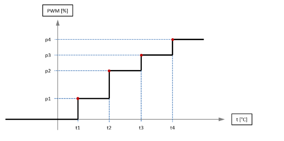
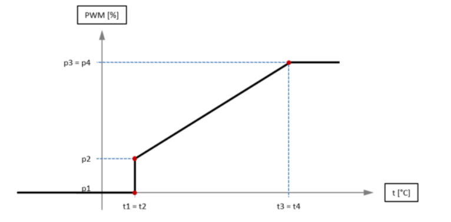

Supports to control the smart fan. For each fan, four temperature thresholds can be configured with corresponding fan power levels which are applied when the threshold is exceeded.
Also provide two different operations to control PWM speed:
Operation of SMART FAN Mode:
please use EApiSmartFanSetMode function with
SEMA_FAN_MODE_AUTOparameter and provides 4 levels of temperature & 4 levels of PWM are configured to get the below ladder chart:For example:
| | Level 1 | Level 2 | Level 3 | level 4 |
| —————- | ———— | ———— | ———— | ———— |
| Temperature | 30℃ (t1) | 40℃ (t2) | 50℃ (t3) | 80℃ (t4) |
| PWM | 40 (p1) | 50 (p2) | 60 (p3) | 100 (p4) |

Operation of SOFT FAN Mode:
Please use BMC capability command to check Bit 34 & Bit 39 to see which design of SOFT FAN are using on your platform.
| Bit 34 | Bit 39 | FAN Mode | Type |
| ——— | ——— | ——————————— | —————————————————————————————— |
| 0 | 1 | SEMA_FAN_MODE_SOFT_FAN | 4 level of temperature & PWM as the below linear chart 1 |
| 1 | 0 | SEMA_FAN_MODE_AUTO | 2 level of temperature & PWM as the below linear chart 2 |
| 0 | 0 | Not support | Not support |
| 1 | 1 | Not support | Not support |Linear chart 1 with 4 level of temperature & PWM configuration:
For example,
| | Level 1 | Level 2 | Level 3 | level 4 |
| —————- | ———— | ———— | ———— | ———— |
| Temperature | 30℃ (t1) | 40℃ (t2) | 50℃ (t3) | 80℃ (t4) |
PWM | 40 (p1) | 50 (p2) | 60 (p3) | 100 (p4) |Linear chart 2 with 2 level of temperature & PWM configuration:
For example: (The Rule is t1 = t2; t3 = t4; p3 = p4)
| | Level 1 | Level 2 | Level 3 | level 4 |
| —————- | —————— | —————— | —————— | —————— |
| Temperature | 30℃ (t1) | 30℃ (t2) | 75℃ (t3) | 75℃ (t4) |
| PWM | 0 (p1) | 30 (p2) | 100 (p3) | 100 (p4) |
List of Sys Interface
Based on platform (LEC-AL, cExpress-WL, etc) device name (hwmonX) will change. To confirm the device name which is created by our driver, check the /sys/bus/platform/devices/adl-bmc-fan/hwmon/ path.
Ex: $ ls /sys/bus/platform/devices/adl-bmc-fan/hwmon/
Output: hwmon2
In the above example our device is hwmon2, so need to replace hwmonX in below commands with hwmon2
To set temperature set points (1-4)
echo {temperature} > /sys/class/hwmon/hwmonX/device/pwm_auto_point_temp
In the example below, the user is setting temperature of set point 1 and Fan ID as 1 (SEMA_EAPI_ID_FAN_CPU) with temperature as 10
echo 10 > /sys/class/hwmon/hwmon2/device/pwm1_auto_point1_temp
echo 20 > /sys/class/hwmon/hwmon2/device/pwm1_auto_point2_temp
echo 30 > /sys/class/hwmon/hwmon2/device/pwm1_auto_point3_temp
echo 40 > /sys/class/hwmon/hwmon2/device/pwm1_auto_point4_temp
To get temperature set points (1-4)
cat /sys/class/hwmon/hwmonX/device/pwm_auto_point_temp
In the example below, the user is getting temperature of set point 1 and fan ID 1 (SEMA_EAPI_ID_FAN_CPU)
cat /sys/class/hwmon/hwmon2/device/pwm1_auto_point1_temp
cat /sys/class/hwmon/hwmon2/device/pwm1_auto_point2_tempcat /sys/class/hwmon/hwmon2/device/pwm1_auto_point3_temp
cat /sys/class/hwmon/hwmon2/device/pwm1_auto_point4_temp
To set PWM set points (1-4)
echo {PWM value} > /sys/class/hwmon/hwmonX/device/pwm_auto_point_pwm
In the example below, user is setting PWM value of set point 1 and fan ID 1 (SEMA_EAPI_ID_FAN_CPU) with PWM level as 10
echo 10 > /sys/class/hwmon/hwmon2/device/pwm1_auto_point1_pwm
echo 10 > /sys/class/hwmon/hwmon2/device/pwm1_auto_point2_pwm
echo 10 > /sys/class/hwmon/hwmon2/device/pwm1_auto_point3_pwm
echo 10 > /sys/class/hwmon/hwmon2/device/pwm1_auto_point4_pwm
To get PWM set points (1-4)
cat /sys/class/hwmon/hwmonX/device/pwm_auto_point_pwm
In the example below, user is getting PWM value of set point 2 and fan ID as 2 (SEMA_EAPI_ID_FAN_SYSTEM_1 )
cat /sys/class/hwmon/hwmon2/device/pwm2_auto_point1_pwm
cat /sys/class/hwmon/hwmon2/device/pwm2_auto_point2_pwm
cat /sys/class/hwmon/hwmon2/device/pwm2_auto_point3_pwm
cat /sys/class/hwmon/hwmon2/device/pwm2_auto_point4_pwm
The configration of Fan Mode:
| Fan Mode | Value |
| ——————————— | ——- |
| SEMA_FAN_AUTO | 0 |
| SEMA_FAN_OFF | 1 |
| SEMA_FAN_ON | 2 |
| SEMA_FAN_AUTO_SOFT_FAN | 3 |To set fan mode
echo {FAN Mode value} > /sys/class/hwmon/hwmonX/device/pwm1_enable
In the example below, user is setting fan mode as 1
echo 1 > /sys/class/hwmon/hwmon2/device/pwm1_enable
To get fan mode
cat /sys/class/hwmon/hwmon2/device/pwm1_enable
The configuration of temperature source
| Temperature sources | Value |
| —————————- | ——- |
| CPU Temperature | 0 |
| Board Temperature | 1 |To set temperature source
echo {temperature source value} /sys/class/hwmon/hwmonX/device/pwm1_auto_channels_temp
In the example below, user is setting temperature source as 1 (Board temperature)
echo 1 > /sys/class/hwmon/hwmon2/device/pwm1_auto_channels_temp
To get temperature source:
cat /sys/class/hwmon/hwmon2/device/pwm1_auto_channels_temp
To get CPU current temperature
cat /sys/class/hwmon/hwmonX/device/cpu_cur_temp
To get CPU minimum temperature
cat /sys/class/hwmon/hwmonX/device/cpu_min_temp
- To get CPU maximum temperature
cat /sys/class/hwmon/hwmonX/device/cpu_max_temp
- To get CPU startup temperature
cat /sys/class/hwmon/hwmonX/device/cpu_startup_temp
- To get system1 current temperature
cat /sys/class/hwmon/hwmonX/device/sys1_cur_temp
To get system1 minimum temperature
cat /sys/class/hwmon/hwmonX/device/sys1_min_temp
To get system1 maximum temperature
cat /sys/class/hwmon/hwmonX/device/sys1_max_temp
To get system1 startup temperature.
cat /sys/class/hwmon/hwmonX/device/sys1_startup_temp
To get system2 current temperature
cat /sys/class/hwmon/hwmonX/device/sys2_cur_temp
To get system2 minimum temperature.
cat /sys/class/hwmon/hwmonX/device/sys2_min_temp
To get system2 maximum temperature.
cat /sys/class/hwmon/hwmonX/device/sys2_max_temp
To get system2 startup temperature.
cat /sys/class/hwmon/hwmonX/device/sys2_startup_temp
To get CPU fan speed.
cat /sys/class/hwmon/hwmonX/device/cpu_fan_speed
To get system1 fan speed.
cat /sys/class/hwmon/hwmonX/device/sys1_fan_speed
To get system2 fan speed.
cat /sys/class/hwmon/hwmonX/device/sys2_fan_speed
To get system3 fan speed.
cat /sys/class/hwmon/hwmonX/device/sys3_fan_speed
List of SEMA EAPI (Support Windows & Linux)
uint32_t uint32_t EApiSmartFanSetTempSetpoints( |
Description
Set temperature levels ( variable type is signed integer / Degree Celsius)
Parameters:
uint32_t FanID:
Select FAN ID as the parameter
| ID | Description |
| ————————————- | ——————- |
| SEMA_EAPI_ID_FAN_CPU | CPU Fan |
| SEMA_EAPI_ID_FAN_SYSTEM_1 | System Fan #1 |
| SEMA_EAPI_ID_FAN_SYSTEM_2 | System Fan #2 |
| SEMA_EAPI_ID_FAN_SYSTEM_3 | System Fan #3 |uint32_t Level1:
Configure the first level of temperature (t1)
uint32_t Level2:
Configure the second level of temperature (t2)
uint32_t Level3:
Configure the third level of temperature (t3)
uint32_t Level4:
Configure the fourth level of temperature (t4)
uint32_t uint32_t EApiSmartFanGetTempSetpoints(uint32_t FanId, uint32_t* pLevel1, uint32_t* pLevel2, uint32_t* pLevel3, uint32_t* pLevel4) |
Description
Get temperature levels
Parameters:
uint32_t FanID:
Select FAN ID as the parameter
| ID | Description |
| ————————————- | ——————- |
| SEMA_EAPI_ID_FAN_CPU | CPU Fan |
| SEMA_EAPI_ID_FAN_SYSTEM_1 | System Fan #1 |
| SEMA_EAPI_ID_FAN_SYSTEM_2 | System Fan #2 |
| SEMA_EAPI_ID_FAN_SYSTEM_3 | System Fan #3 |uint32_t* Level1:
Pointer to a buffer that receives the current temperature level (t1)
uint32_t* Level2:
Pointer to a buffer that receives the current temperature level (t2)
uint32_t* Level3:
Pointer to a buffer that receives the current temperature level (t3)
uint32_t* Level4:
Pointer to a buffer that receives the current temperature level (t4)
uint32_t uint32_t EApiSmartFanSetPWMSetpoints( |
Description
Set PWM levels ( Range is 0 ~100 )
Parameters:
uint32_t FanID:
Select FAN ID as the parameter
| ID | Description |
| ————————————- | ——————- |
| SEMA_EAPI_ID_FAN_CPU | CPU Fan |
| SEMA_EAPI_ID_FAN_SYSTEM_1 | System Fan #1 |
| SEMA_EAPI_ID_FAN_SYSTEM_2 | System Fan #2 |
| SEMA_EAPI_ID_FAN_SYSTEM_3 | System Fan #3 |uint32_t Level1:
Configure the first level of PWM (p1)
uint32_t Level2:
Configure the second level of PWM (p2)
uint32_t Level3:
Configure the third level of PWM (p3)
uint32_t Level4:
Configure the fourth level of PWM (p4)
uint32_t uint32_t EApiSmartFanGetTempSetpoints( |
Description
Get PWM levels ( Range is 0 ~100 )
Parameters:
uint32_t FanID:
Select FAN ID as the parameter
| ID | Description |
| ————————————- | ——————- |
| SEMA_EAPI_ID_FAN_CPU | CPU Fan |
| SEMA_EAPI_ID_FAN_SYSTEM_1 | System Fan #1 |
| SEMA_EAPI_ID_FAN_SYSTEM_2 | System Fan #2 |
| SEMA_EAPI_ID_FAN_SYSTEM_3 | System Fan #3 |uint32_t* Level1:
Pointer to a buffer that receives the current PWM level (p1)
uint32_t* Level2:
Pointer to a buffer that receives the current PWM level (p2)
uint32_t* Level3:
Pointer to a buffer that receives the current PWM level (p3)
uint32_t* Level4:
Pointer to a buffer that receives the current PWM level (p4)
uint32_t uint32_t EApiSmartFanSetMode(uint32_t FanId, uint8_t pFanMode) |
Description
Set FAN Mode
Parameters:
uint32_t FanID:
Select FAN ID as the parameter
| ID | Description |
| ————————————- | ——————- |
| SEMA_EAPI_ID_FAN_CPU | CPU Fan |
| SEMA_EAPI_ID_FAN_SYSTEM_1 | System Fan #1 |
| SEMA_EAPI_ID_FAN_SYSTEM_2 | System Fan #2 |
| SEMA_EAPI_ID_FAN_SYSTEM_3 | System Fan #3 |uint32_t pFanMode:
Select FAN mode as the parameter
| FAN Mode | Description |
| ——————————— | —————————————————————————————— |
| SEMA_FAN_MODE_ON | Default speed is only refer to PWM level #4 |
| SEMA_FAN_MODE_OFF | Turn Off FAN |
| SEMA_FAN_MODE_AUTO | it will be configured as “stepwise operation between Temperature and PWM” |
| SEMA_FAN_MODE_SOFT_FAN | it will be configured as “Linear operation between Temperature and PWM” |
uint32_t uint32_t EApiSmartFanGetMode(uint32_t FanId, uint8_t* pFanMode) |
Description
Get FAN Mode
Parameters:
uint32_t FanID:
Select FAN ID as the parameter
| ID | Description |
| ————————————- | ——————- |
| SEMA_EAPI_ID_FAN_CPU | CPU Fan |
| SEMA_EAPI_ID_FAN_SYSTEM_1 | System Fan #1 |
| SEMA_EAPI_ID_FAN_SYSTEM_2 | System Fan #2 |
| SEMA_EAPI_ID_FAN_SYSTEM_3 | System Fan #3 |uint8_t* pFanMode:
Pointer to a buffer that receives the current FAN mode
| FAN Mode | Description |
| ——————————— | ——————————————————————- |
| SEMA_FAN_MODE_ON | Default speed is only refer to PWM level #4 |
| SEMA_FAN_MODE_OFF | Turn Off FAN |
| SEMA_FAN_MODE_AUTO | it will be configured as “stepwise operation” |
| SEMA_FAN_MODE_SOFT_FAN | it will be configured as “Linear operation” |
uint32_t uint32_t EApiSmartFanGetTempSrc(uint32_t FanId, uint8_t* pTempSrc) |
Description
Get the temperature source for the specified FAN ID. SMART FAN will be triggered by the temperature source. Only CPU and system temperature could be set as temperature source of FANs
Parameters:
uint32_t FanID:
Select FAN ID as the parameter
| ID | Description |
| ————————————- | ——————- |
| SEMA_EAPI_ID_FAN_CPU | CPU Fan |
| SEMA_EAPI_ID_FAN_SYSTEM_1 | System Fan #1 |
| SEMA_EAPI_ID_FAN_SYSTEM_2 | System Fan #2 |
| SEMA_EAPI_ID_FAN_SYSTEM_3 | System Fan #3 |uint8_t* pTempSrc:
Pointer to a buffer that receives the current temperature source.
| Temperature Source ID | Description |
| ——————————- | ——————————————— |
| SEMA_FAN_TEMP_CPU | Temperature source from CPU |
| SEMA_FAN_TEMP_SYS | Temperature source from System |
uint32_t uint32_t EApiSmartFanSetTempSrc(uint32_t FanId, uint8_t pTempSrc) |
Description
Set the temperature source for the specified FAN ID. SMART FAN will be triggered by the temperature source. Only CPU and system temperature could be set as temperature source of FANs
Parameters:
uint32_t FanID:
Select FAN ID as the parameter
| ID | Description |
| ————————————- | ——————- |
| SEMA_EAPI_ID_FAN_CPU | CPU Fan |
| SEMA_EAPI_ID_FAN_SYSTEM_1 | System Fan #1 |
| SEMA_EAPI_ID_FAN_SYSTEM_2 | System Fan #2 |
| SEMA_EAPI_ID_FAN_SYSTEM_3 | System Fan #3 |uint8_t pTempSrc:
Select ID as the parameter
| Temperature Source ID | Description |
| ——————————- | ——————————————— |
| SEMA_FAN_TEMP_CPU | Temperature source from CPU |
| SEMA_FAN_TEMP_SYS | Temperature source from System |